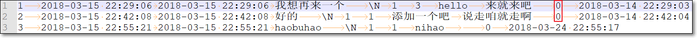
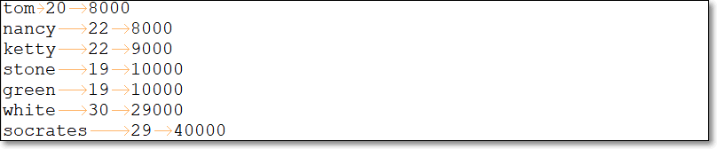

MapReduce编程模型
1. 自定义OutputFormat
1.1 需求
现在有一些订单的评论数据，要将订单的好评与其它级别的评论（中评、差评）进行区分开来，将最终的数据分开到不同的文件夹下面去
数据第九个字段表示评分等级：0 好评，1 中评，2 差评

1.2 逻辑分析
- 程序的关键点是在一个mapreduce程序中，根据数据的不同(好评的评级不同)，输出两类结果到不同目录
- 这类灵活的输出，需求通过自定义OutputFormat来实现
1.3 实现要点
- 在mapreduce中访问外部资源
- 自定义OutputFormat类，覆写getRecordWriter()方法
- 自定义RecordWriter类，覆写具体输出数据的方法write()
1.4 MR代码
- 自定义OutputFormat
package com.kaikeba.hadoop.outputformat;
import org.apache.hadoop.fs.FSDataOutputStream;
import org.apache.hadoop.fs.FileSystem;
import org.apache.hadoop.fs.Path;
import org.apache.hadoop.io.NullWritable;
import org.apache.hadoop.io.Text;
import org.apache.hadoop.mapreduce.RecordWriter;
import org.apache.hadoop.mapreduce.TaskAttemptContext;
import org.apache.hadoop.mapreduce.lib.output.FileOutputFormat;
import java.io.IOException;
/**
*
* 本例使用框架默认的Reducer，它将Mapper输入的kv对，原样输出；所以reduce输出的kv类型分别是Text, NullWritable
* 自定义OutputFormat的类，泛型表示reduce输出的键值对类型；要保持一致;
* map--(kv)-->reduce--(kv)-->OutputFormat
*/
public class MyOutPutFormat extends FileOutputFormat<Text, NullWritable> {
/**
* 两个输出文件;
* good用于保存好评文件；其它评级保存到bad中
* 根据实际情况修改path;node01及端口号8020
*/
String bad = "hdfs://node01:8020/outputformat/bad/r.txt";
String good = "hdfs://node01:8020/outputformat/good/r.txt";
/**
*
* @param context
* @return
* @throws IOException
* @throws InterruptedException
*/
@Override
public RecordWriter<Text, NullWritable> getRecordWriter(TaskAttemptContext context) throws IOException, InterruptedException {
//获得文件系统对象
FileSystem fs = FileSystem.get(context.getConfiguration());
//两个输出文件路径
Path badPath = new Path(bad);
Path goodPath = new Path(good);
FSDataOutputStream badOut = fs.create(badPath);
FSDataOutputStream goodOut = fs.create(goodPath);
return new MyRecordWriter(badOut,goodOut);
}
/**
* 泛型表示reduce输出的键值对类型；要保持一致
*/
static class MyRecordWriter extends RecordWriter<Text, NullWritable>{
FSDataOutputStream badOut = null;
FSDataOutputStream goodOut = null;
public MyRecordWriter(FSDataOutputStream badOut, FSDataOutputStream goodOut) {
this.badOut = badOut;
this.goodOut = goodOut;
}
/**
* 自定义输出kv对逻辑
* @param key
* @param value
* @throws IOException
* @throws InterruptedException
*/
@Override
public void write(Text key, NullWritable value) throws IOException, InterruptedException {
if (key.toString().split("\t")[9].equals("0")){//好评
goodOut.write(key.toString().getBytes());
goodOut.write("\r\n".getBytes());
}else{//其它评级
badOut.write(key.toString().getBytes());
badOut.write("\r\n".getBytes());
}
}
/**
* 关闭流
* @param context
* @throws IOException
* @throws InterruptedException
*/
@Override
public void close(TaskAttemptContext context) throws IOException, InterruptedException {
if(goodOut !=null){
goodOut.close();
}
if(badOut !=null){
badOut.close();
}
}
}
}
- main方法
package com.kaikeba.hadoop.outputformat;
import org.apache.hadoop.conf.Configuration;
import org.apache.hadoop.conf.Configured;
import org.apache.hadoop.fs.Path;
import org.apache.hadoop.io.LongWritable;
import org.apache.hadoop.io.NullWritable;
import org.apache.hadoop.io.Text;
import org.apache.hadoop.mapreduce.Job;
import org.apache.hadoop.mapreduce.Mapper;
import org.apache.hadoop.mapreduce.lib.input.TextInputFormat;
import org.apache.hadoop.util.Tool;
import org.apache.hadoop.util.ToolRunner;
import java.io.IOException;
public class MyOwnOutputFormatMain extends Configured implements Tool {
public int run(String[] args) throws Exception {
Configuration conf = super.getConf();
Job job = Job.getInstance(conf, MyOwnOutputFormatMain.class.getSimpleName());
job.setJarByClass(MyOwnOutputFormatMain.class);
//默认项，可以省略或者写出也可以
//job.setInputFormatClass(TextInputFormat.class);
//设置输入文件
TextInputFormat.addInputPath(job, new Path(args[0]));
job.setMapperClass(MyMapper.class);
//job.setMapOutputKeyClass(Text.class);
//job.setMapOutputValueClass(NullWritable.class);
//设置自定义的输出类
job.setOutputFormatClass(MyOutPutFormat.class);
//设置一个输出目录，这个目录会输出一个success的成功标志的文件
MyOutPutFormat.setOutputPath(job, new Path(args[1]));
job.setOutputKeyClass(Text.class);
job.setOutputValueClass(NullWritable.class);
//默认项，即默认有一个reduce任务，所以可以省略
// job.setNumReduceTasks(1);
// //Reducer将输入的键值对原样输出
// job.setReducerClass(Reducer.class);
boolean b = job.waitForCompletion(true);
return b ? 0: 1;
}
/**
*
* Mapper输出的key、value类型
* 文件每行的内容作为输出的key，对应Text类型
* 输出的value为null，对应NullWritable
*/
public static class MyMapper extends Mapper<LongWritable, Text, Text, NullWritable> {
@Override
protected void map(LongWritable key, Text value, Context context) throws IOException, InterruptedException {
//把当前行内容作为key输出；value为null
context.write(value, NullWritable.get());
}
}
/**
*
* @param args /ordercomment.csv /ofo
* @throws Exception
*/
public static void main(String[] args) throws Exception {
Configuration configuration = new Configuration();
ToolRunner.run(configuration, new MyOwnOutputFormatMain(), args);
}
}
1.5 总结
- 自定义outputformat
- 泛型与reduce输出的键值对类型保持一致
- 覆写getRecordWriter()方法
自定义RecordWriter
- 泛型与reduce输出的键值对类型保持一致
- 覆写具体输出数据的方法write()、close()
main方法
- job.setOutputFormatClass使用自定义在输出类
2. 二次排序
2.1 需求
数据：有一个简单的关于员工工资的记录文件salary.txt
每条记录如下，有3个字段，分别表示name、age、salary
nancy 22 8000

使用MR处理记录，实现结果中
- 按照工资从高到低的降序排序
- 若工资相同，则按年龄升序排序
2.2 逻辑分析
利用MR中key具有可比较的特点
MapReduce中，根据key进行分区、排序、分组
有些MR的输出的key可以直接使用hadoop框架的可序列化可比较类型表示，如Text、IntWritable等等，而这些类型本身是可比较的；如IntWritable默认升序排序

但有时，使用MR编程，输出的key，若使用hadoop自带的key类型无法满足需求
- 此时，需要自定义的key类型（包含的是非单一信息，如此例包含工资、年龄）；
- 并且也得是可序列化、可比较的
需要自定义key，定义排序规则
- 实现：按照人的salary降序排序，若相同，则再按age升序排序；若salary、age相同，则放入同一组
2.3 MR代码
- 详见工程代码
- 自定义key类型Person类
package com.kaikeba.hadoop.secondarysort;
import org.apache.hadoop.io.WritableComparable;
import java.io.DataInput;
import java.io.DataOutput;
import java.io.IOException;
//根据输入文件格式，定义JavaBean，作为MR时，Map的输出key类型；要求此类可序列化、可比较
public class Person implements WritableComparable<Person> {
private String name;
private int age;
private int salary;
public Person() {
}
public Person(String name, int age, int salary) {
//super();
this.name = name;
this.age = age;
this.salary = salary;
}
public String getName() {
return name;
}
public void setName(String name) {
this.name = name;
}
public int getAge() {
return age;
}
public void setAge(int age) {
this.age = age;
}
public int getSalary() {
return salary;
}
public void setSalary(int salary) {
this.salary = salary;
}
@Override
public String toString() {
return this.salary + " " + this.age + " " + this.name;
}
//两个Person对象的比较规则：①先比较salary，高的排序在前；②若相同，age小的在前
public int compareTo(Person other) {
int compareResult= this.salary - other.salary;
if(compareResult != 0) {//若两个人工资不同
//工资降序排序；即工资高的排在前边
return -compareResult;
} else {//若工资相同
//年龄升序排序；即年龄小的排在前边
return this.age - other.age;
}
}
//序列化，将NewKey转化成使用流传送的二进制
public void write(DataOutput dataOutput) throws IOException {
//注意：①使用正确的write方法；②记住此时的序列化的顺序，name、age、salary
dataOutput.writeUTF(name);
dataOutput.writeInt(age);
dataOutput.writeInt(salary);
}
//使用in读字段的顺序，要与write方法中写的顺序保持一致：name、age、salary
public void readFields(DataInput dataInput) throws IOException {
//read string
//注意：①使用正确的read方法；②读取顺序与write()中序列化的顺序保持一致
this.name = dataInput.readUTF();
this.age = dataInput.readInt();
this.salary = dataInput.readInt();
}
}
- main类、mapper、reducer
package com.kaikeba.hadoop.secondarysort;
import org.apache.hadoop.conf.Configuration;
import org.apache.hadoop.fs.FileSystem;
import org.apache.hadoop.fs.Path;
import org.apache.hadoop.io.LongWritable;
import org.apache.hadoop.io.NullWritable;
import org.apache.hadoop.io.Text;
import org.apache.hadoop.mapreduce.Job;
import org.apache.hadoop.mapreduce.Mapper;
import org.apache.hadoop.mapreduce.Reducer;
import org.apache.hadoop.mapreduce.lib.input.FileInputFormat;
import org.apache.hadoop.mapreduce.lib.output.FileOutputFormat;
import java.io.IOException;
import java.net.URI;
public class SecondarySort {
/**
*
* @param args /salary.txt /secondarysort
* @throws Exception
*/
public static void main(String[] args) throws Exception {
Configuration configuration = new Configuration();
//configuration.set("mapreduce.job.jar","/home/bruce/project/kkbhdp01/target/com.kaikeba.hadoop-1.0-SNAPSHOT.jar");
Job job = Job.getInstance(configuration, SecondarySort.class.getSimpleName());
FileSystem fileSystem = FileSystem.get(URI.create(args[1]), configuration);
//生产中慎用
if (fileSystem.exists(new Path(args[1]))) {
fileSystem.delete(new Path(args[1]), true);
}
FileInputFormat.setInputPaths(job, new Path(args[0]));
job.setMapperClass(MyMap.class);
//由于mapper与reducer输出的kv类型分别相同，所以，下两行可以省略
// job.setMapOutputKeyClass(Person.class);
// job.setMapOutputValueClass(NullWritable.class);
//设置reduce的个数;默认为1
//job.setNumReduceTasks(1);
job.setReducerClass(MyReduce.class);
job.setOutputKeyClass(Person.class);
job.setOutputValueClass(NullWritable.class);
FileOutputFormat.setOutputPath(job, new Path(args[1]));
job.waitForCompletion(true);
}
//MyMap的输出key用自定义的Person类型；输出的value为null
public static class MyMap extends Mapper<LongWritable, Text, Person, NullWritable> {
@Override
protected void map(LongWritable key, Text value, Context context)
throws IOException, InterruptedException {
String[] fields = value.toString().split("\t");
String name = fields[0];
int age = Integer.parseInt(fields[1]);
int salary = Integer.parseInt(fields[2]);
//在自定义类中进行比较
Person person = new Person(name, age, salary);
//person对象作为输出的key
context.write(person, NullWritable.get());
}
}
public static class MyReduce extends Reducer<Person, NullWritable, Person, NullWritable> {
@Override
protected void reduce(Person key, Iterable<NullWritable> values, Context context) throws IOException, InterruptedException {
//输入的kv对，原样输出
context.write(key, NullWritable.get());
}
}
}
2.4 总结
- 如果MR时，key的排序规则比较复杂，比如需要根据字段1排序，若字段1相同，则需要根据字段2排序…，此时，可以使用自定义key实现
- 将自定义的key作为MR中，map输出的key的类型（reduce输入的类型）
- 自定义的key
- 实现WritableComparable接口
- 实现compareTo比较方法
- 实现write序列化方法
- 实现readFields反序列化方法
3. 自定义分组求topN
3.1 需求
现有一个淘宝用户订单历史记录文件；每条记录有6个字段，分别表示
- userid、datetime、title商品标题、unitPrice商品单价、purchaseNum购买量、productId商品ID

现使用MR编程，求出每个用户、每个月消费金额最多的两笔订单，花了多少钱
- 所以得相同用户、同一个年月的数据，分到同一组
3.2 逻辑分析
- 根据文件格式，自定义JavaBean类OrderBean
- 实现WritableComparable接口
- 包含6个字段分别对应文件中的6个字段
- 重点实现compareTo方法
- 先比较userid是否相等；若不相等，则userid升序排序
- 若相等，比较两个Bean的日期是否相等；若不相等，则日期升序排序
- 若相等，再比较总开销，降序排序
- 实现序列化方法write()
- 实现反序列化方法readFields()
- 自定义分区类
- 继承Partitioner类
- getPartiton()实现，userid相同的，处于同一个分区
- 自定义Mapper类
- 输出key是当前记录对应的Bean对象
- 输出的value对应当前下单的总开销
- 自定义分组类
- 决定userid相同、日期（年月）相同的记录，分到同一组中，调用一次reduce()
- 自定义Reduce类
- reduce()中求出当前一组数据中，开销头两笔的信息
- main方法
- job.setMapperClass
- job.setPartitionerClass
- job.setReducerClass
- job.setGroupingComparatorClass
3.3 MR代码
详细代码见代码工程
- OrderBean
package com.kaikeba.hadoop.grouping;
import org.apache.hadoop.io.WritableComparable;
import java.io.DataInput;
import java.io.DataOutput;
import java.io.IOException;
//实现WritableComparable接口
public class OrderBean implements WritableComparable<OrderBean> {
//用户ID
private String userid;
//年月
//year+month -> 201408
private String datetime;
//标题
private String title;
//单价
private double unitPrice;
//购买量
private int purchaseNum;
//商品ID
private String produceId;
public OrderBean() {
}
public OrderBean(String userid, String datetime, String title, double unitPrice, int purchaseNum, String produceId) {
super();
this.userid = userid;
this.datetime = datetime;
this.title = title;
this.unitPrice = unitPrice;
this.purchaseNum = purchaseNum;
this.produceId = produceId;
}
//key的比较规则
public int compareTo(OrderBean other) {
//OrderBean作为MR中的key；如果对象中的userid相同，即ret1为0；就表示两个对象是同一个用户
int ret1 = this.userid.compareTo(other.userid);
if (ret1 == 0) {
//如果userid相同，比较年月
String thisYearMonth = this.getDatetime();
String otherYearMonth = other.getDatetime();
int ret2 = thisYearMonth.compareTo(otherYearMonth);
if(ret2 == 0) {//若datetime相同
//如果userid、年月都相同，比较单笔订单的总开销
Double thisTotalPrice = this.getPurchaseNum()*this.getUnitPrice();
Double oTotalPrice = other.getPurchaseNum()*other.getUnitPrice();
//总花销降序排序；即总花销高的排在前边
return -thisTotalPrice.compareTo(oTotalPrice);
} else {
//若datatime不同，按照datetime升序排序
return ret2;
}
} else {
//按照userid升序排序
return ret1;
}
}
/**
* 序列化
* @param dataOutput
* @throws IOException
*/
public void write(DataOutput dataOutput) throws IOException {
dataOutput.writeUTF(userid);
dataOutput.writeUTF(datetime);
dataOutput.writeUTF(title);
dataOutput.writeDouble(unitPrice);
dataOutput.writeInt(purchaseNum);
dataOutput.writeUTF(produceId);
}
/**
* 反序列化
* @param dataInput
* @throws IOException
*/
public void readFields(DataInput dataInput) throws IOException {
this.userid = dataInput.readUTF();
this.datetime = dataInput.readUTF();
this.title = dataInput.readUTF();
this.unitPrice = dataInput.readDouble();
this.purchaseNum = dataInput.readInt();
this.produceId = dataInput.readUTF();
}
/**
* 使用默认分区器，那么userid相同的，落入同一分区；
* 另外一个方案：此处不覆写hashCode方法，而是自定义分区器，getPartition方法中，对OrderBean的userid求hashCode值%reduce任务数
* @return
*/
// @Override
// public int hashCode() {
// return this.userid.hashCode();
// }
@Override
public String toString() {
return "OrderBean{" +
"userid='" + userid + '\'' +
", datetime='" + datetime + '\'' +
", title='" + title + '\'' +
", unitPrice=" + unitPrice +
", purchaseNum=" + purchaseNum +
", produceId='" + produceId + '\'' +
'}';
}
public String getUserid() {
return userid;
}
public void setUserid(String userid) {
this.userid = userid;
}
public String getDatetime() {
return datetime;
}
public void setDatetime(String datetime) {
this.datetime = datetime;
}
public String getTitle() {
return title;
}
public void setTitle(String title) {
this.title = title;
}
public double getUnitPrice() {
return unitPrice;
}
public void setUnitPrice(double unitPrice) {
this.unitPrice = unitPrice;
}
public int getPurchaseNum() {
return purchaseNum;
}
public void setPurchaseNum(int purchaseNum) {
this.purchaseNum = purchaseNum;
}
public String getProduceId() {
return produceId;
}
public void setProduceId(String produceId) {
this.produceId = produceId;
}
}
- MyPartitioner
package com.kaikeba.hadoop.grouping;
import org.apache.hadoop.io.DoubleWritable;
import org.apache.hadoop.mapreduce.Partitioner;
//mapper的输出key类型是自定义的key类型OrderBean；输出value类型是单笔订单的总开销double -> DoubleWritable
public class MyPartitioner extends Partitioner<OrderBean, DoubleWritable> {
@Override
public int getPartition(OrderBean orderBean, DoubleWritable doubleWritable, int numReduceTasks) {
//userid相同的，落入同一分区
return (orderBean.getUserid().hashCode() & Integer.MAX_VALUE) % numReduceTasks;
}
}
- MyMapper
package com.kaikeba.hadoop.grouping;
import org.apache.hadoop.io.DoubleWritable;
import org.apache.hadoop.io.LongWritable;
import org.apache.hadoop.io.Text;
import org.apache.hadoop.mapreduce.Mapper;
import java.io.IOException;
/**
* 输出kv，分别是OrderBean、用户每次下单的总开销
*/
public class MyMapper extends Mapper<LongWritable, Text, OrderBean, DoubleWritable> {
DoubleWritable valueOut = new DoubleWritable();
DateUtils dateUtils = new DateUtils();
@Override
protected void map(LongWritable key, Text value, Context context) throws IOException, InterruptedException {
//13764633023 2014-12-01 02:20:42.000 全视目Allseelook 原宿风暴显色美瞳彩色隐形艺术眼镜1片 拍2包邮 33.6 2 18067781305
String record = value.toString();
String[] fields = record.split("\t");
if(fields.length == 6) {
String userid = fields[0];
String datetime = fields[1];
String yearMonth = dateUtils.getYearMonthString(datetime);
String title = fields[2];
double unitPrice = Double.parseDouble(fields[3]);
int purchaseNum = Integer.parseInt(fields[4]);
String produceId = fields[5];
//生成OrderBean对象
OrderBean orderBean = new OrderBean(userid, yearMonth, title, unitPrice, purchaseNum, produceId);
//此订单的总开销
double totalPrice = unitPrice * purchaseNum;
valueOut.set(totalPrice);
context.write(orderBean, valueOut);
}
}
}
- MyReducer
package com.kaikeba.hadoop.grouping;
import org.apache.hadoop.io.DoubleWritable;
import org.apache.hadoop.io.NullWritable;
import org.apache.hadoop.io.Text;
import org.apache.hadoop.mapreduce.Reducer;
import java.io.IOException;
//输出的key为userid拼接上年月的字符串，对应Text；输出的value对应单笔订单的金额
public class MyReducer extends Reducer<OrderBean, DoubleWritable, Text, DoubleWritable> {
/**
* ①由于自定义分组逻辑，相同用户、相同年月的订单是一组，调用一次reduce()；
* ②由于自定义的key类OrderBean中，比较规则compareTo规定，相同用户、相同年月的订单，按总金额降序排序
* 所以取出头两笔，就实现需求
* @param key
* @param values
* @param context
* @throws IOException
* @throws InterruptedException
*/
@Override
protected void reduce(OrderBean key, Iterable<DoubleWritable> values, Context context) throws IOException, InterruptedException {
//求每个用户、每个月、消费金额最多的两笔多少钱
int num = 0;
for(DoubleWritable value: values) {
if(num < 2) {
String keyOut = key.getUserid() + " " + key.getDatetime();
context.write(new Text(keyOut), value);
num++;
} else {
break;
}
}
}
}
- MyGroup
package com.kaikeba.hadoop.grouping;
import org.apache.hadoop.io.WritableComparable;
import org.apache.hadoop.io.WritableComparator;
//自定义分组类：reduce端调用reduce()前，对数据做分组；每组数据调用一次reduce()
public class MyGroup extends WritableComparator {
public MyGroup() {
//第一个参数表示key class
super(OrderBean.class, true);
}
// 注意： 分组实现的方法是这个
// compare（Object a,Object b） 这个方法不可以
//分组逻辑
@Override
public int compare(WritableComparable a, WritableComparable b) {
//userid相同，且同一月的分成一组
OrderBean aOrderBean = (OrderBean)a;
OrderBean bOrderBean = (OrderBean)b;
String aUserId = aOrderBean.getUserid();
String bUserId = bOrderBean.getUserid();
//userid、年、月相同的，作为一组
int ret1 = aUserId.compareTo(bUserId);
if(ret1 == 0) {//同一用户
//年月也相同返回0，在同一组；
return aOrderBean.getDatetime().compareTo(bOrderBean.getDatetime());
} else {
return ret1;
}
}
}
- CustomGroupingMain
package com.kaikeba.hadoop.grouping;
import com.kaikeba.hadoop.wordcount.WordCountMain;
import com.kaikeba.hadoop.wordcount.WordCountMap;
import com.kaikeba.hadoop.wordcount.WordCountReduce;
import org.apache.hadoop.conf.Configuration;
import org.apache.hadoop.conf.Configured;
import org.apache.hadoop.fs.Path;
import org.apache.hadoop.io.DoubleWritable;
import org.apache.hadoop.io.IntWritable;
import org.apache.hadoop.io.Text;
import org.apache.hadoop.mapreduce.Job;
import org.apache.hadoop.mapreduce.lib.input.FileInputFormat;
import org.apache.hadoop.mapreduce.lib.output.FileOutputFormat;
import org.apache.hadoop.util.Tool;
import org.apache.hadoop.util.ToolRunner;
import java.io.IOException;
public class CustomGroupingMain extends Configured implements Tool {
///tmall-201412-test.csv /cgo
public static void main(String[] args) throws Exception {
int exitCode = ToolRunner.run(new CustomGroupingMain(), args);
System.exit(exitCode);
}
@Override
public int run(String[] args) throws Exception {
//判断以下，输入参数是否是两个，分别表示输入路径、输出路径
if (args.length != 2 || args == null) {
System.out.println("please input Path!");
System.exit(0);
}
Configuration configuration = new Configuration();
//告诉程序，要运行的jar包在哪
//configuration.set("mapreduce.job.jar","/home/hadoop/IdeaProjects/Hadoop/target/com.kaikeba.hadoop-1.0-SNAPSHOT.jar");
//调用getInstance方法，生成job实例
Job job = Job.getInstance(configuration, CustomGroupingMain.class.getSimpleName());
//设置jar包，参数是包含main方法的类
job.setJarByClass(CustomGroupingMain.class);
//通过job设置输入/输出格式
//MR的默认输入格式是TextInputFormat，所以下两行可以注释掉
// job.setInputFormatClass(TextInputFormat.class);
// job.setOutputFormatClass(TextOutputFormat.class);
//设置输入/输出路径
FileInputFormat.setInputPaths(job, new Path(args[0]));
FileOutputFormat.setOutputPath(job, new Path(args[1]));
//设置处理Map阶段的自定义的类
job.setMapperClass(MyMapper.class);
//设置map combine类，减少网路传出量
//job.setCombinerClass(MyReducer.class);
job.setPartitionerClass(MyPartitioner.class);
//设置处理Reduce阶段的自定义的类
job.setReducerClass(MyReducer.class);
job.setGroupingComparatorClass(MyGroup.class);
//如果map、reduce的输出的kv对类型一致，直接设置reduce的输出的kv对就行；如果不一样，需要分别设置map, reduce的输出的kv类型
//注意：此处设置的map输出的key/value类型，一定要与自定义map类输出的kv对类型一致；否则程序运行报错
job.setMapOutputKeyClass(OrderBean.class);
job.setMapOutputValueClass(DoubleWritable.class);
//设置reduce task最终输出key/value的类型
//注意：此处设置的reduce输出的key/value类型，一定要与自定义reduce类输出的kv对类型一致；否则程序运行报错
job.setOutputKeyClass(Text.class);
job.setOutputValueClass(DoubleWritable.class);
// 提交作业
return job.waitForCompletion(true) ? 0 : 1;
}
}
- DateUtils
package com.kaikeba.hadoop.grouping;
import java.time.LocalDateTime;
import java.time.format.DateTimeFormatter;
public class DateUtils {
public static void main(String[] args) {
//test1
// String str1 = "13764633024 2014-10-01 02:20:42.000";
// String str2 = "13764633023 2014-11-01 02:20:42.000";
// System.out.println(str1.compareTo(str2));
//test2
// String datetime = "2014-12-01 02:20:42.000";
// LocalDateTime localDateTime = parseDateTime(datetime);
// int year = localDateTime.getYear();
// int month = localDateTime.getMonthValue();
// int day = localDateTime.getDayOfMonth();
// System.out.println("year-> " + year + "; month -> " + month + "; day -> " + day);
//test3
// String datetime = "2014-12-01 02:20:42.000";
// System.out.println(getYearMonthString(datetime));
}
public LocalDateTime parseDateTime(String dateTime) {
DateTimeFormatter formatter = DateTimeFormatter.ofPattern("yyyy-MM-dd HH:mm:ss.SSS");
LocalDateTime localDateTime = LocalDateTime.parse(dateTime, formatter);
return localDateTime;
}
//日期格式转换工具类：将2014-12-14 20:42:14.000转换成201412
public String getYearMonthString(String dateTime) {
DateTimeFormatter formatter = DateTimeFormatter.ofPattern("yyyy-MM-dd HH:mm:ss.SSS");
LocalDateTime localDateTime = LocalDateTime.parse(dateTime, formatter);
int year = localDateTime.getYear();
int month = localDateTime.getMonthValue();
return year + "" + month;
}
}
3.4 总结
- 要实现自定义分组逻辑
- 一般会自定义JavaBean，作为map输出的key
- 实现其中的compareTo方法，设置key的比较逻辑
- 实现序列化方法write()
- 实现反序列化方法readFields()
- 自定义mapper类、reducer类
- 自定义partition类，getPartition方法，决定哪些key落入哪些分区
- 自定义group分组类，决定reduce阶段，哪些kv对，落入同一组，调用一次reduce()
- 写main方法，设置自定义的类
- job.setMapperClass
- job.setPartitionerClass
- job.setReducerClass
- job.setGroupingComparatorClass
- 一般会自定义JavaBean，作为map输出的key
4. MapReduce数据倾斜(20分钟)
- 什么是数据倾斜？
- 数据中不可避免地会出现离群值（outlier），并导致数据倾斜。这些离群值会显著地拖慢MapReduce的执行。
常见的数据倾斜有以下几类：
- 数据频率倾斜——某一个区域的数据量要远远大于其他区域。比如某一个key对应的键值对远远大于其他键的键值对。
- 数据大小倾斜——部分记录的大小远远大于平均值。
在map端和reduce端都有可能发生数据倾斜
- 在map端的数据倾斜可以考虑使用combine
- 在reduce端的数据倾斜常常来源于MapReduce的默认分区器
数据倾斜会导致map和reduce的任务执行时间大为延长，也会让需要缓存数据集的操作消耗更多的内存资源
4.1 如何诊断是否存在数据倾斜（10分钟）
- 如何诊断哪些键存在数据倾斜？
- 发现倾斜数据之后，有必要诊断造成数据倾斜的那些键。有一个简便方法就是在代码里实现追踪每个键的最大值。
- 为了减少追踪量，可以设置数据量阀值，只追踪那些数据量大于阀值的键，并输出到日志中。实现代码如下
- 运行作业后就可以从日志中判断发生倾斜的键以及倾斜程度；跟踪倾斜数据是了解数据的重要一步，也是设计MapReduce作业的重要基础
package com.kaikeba.hadoop.dataskew;
import org.apache.hadoop.io.IntWritable;
import org.apache.hadoop.io.Text;
import org.apache.hadoop.mapreduce.Reducer;
import org.apache.log4j.Logger;
import java.io.IOException;
public class WordCountReduce extends Reducer<Text, IntWritable, Text, IntWritable> {
private int maxValueThreshold;
//日志类
private static final Logger LOGGER = Logger.getLogger(WordCountReduce.class);
@Override
protected void setup(Context context) throws IOException, InterruptedException {
//一个键达到多少后，会做数据倾斜记录
maxValueThreshold = 10000;
}
/*
(hello, 1)
(hello, 1)
(hello, 1)
...
(spark, 1)
key: hello
value: List(1, 1, 1)
*/
public void reduce(Text key, Iterable<IntWritable> values,
Context context) throws IOException, InterruptedException {
int sum = 0;
//用于记录键出现的次数
int i = 0;
for (IntWritable count : values) {
sum += count.get();
i++;
}
//如果当前键超过10000个，则打印日志
if(i > maxValueThreshold) {
LOGGER.info("Received " + i + " values for key " + key);
}
context.write(key, new IntWritable(sum));// 输出最终结果
};
}
4.2 减缓数据倾斜
Reduce数据倾斜一般是指map的输出数据中存在数据频率倾斜的状况，即部分输出键的数据量远远大于其它的输出键
如何减小reduce端数据倾斜的性能损失？常用方式有：
一、自定义分区
基于输出键的背景知识进行自定义分区。
例如，如果map输出键的单词来源于一本书。其中大部分必然是省略词（stopword）。那么就可以将自定义分区将这部分省略词发送给固定的一部分reduce实例。而将其他的都发送给剩余的reduce实例。
二、Combine
- 使用Combine可以大量地减小数据频率倾斜和数据大小倾斜。
- combine的目的就是聚合并精简数据。
三、抽样和范围分区
Hadoop默认的分区器是HashPartitioner，基于map输出键的哈希值分区。这仅在数据分布比较均匀时比较好。在有数据倾斜时就很有问题。
使用分区器需要首先了解数据的特性。TotalOrderPartitioner中，可以通过对原始数据进行抽样得到的结果集来预设分区边界值。
- TotalOrderPartitioner中的范围分区器可以通过预设的分区边界值进行分区。因此它也可以很好地用在矫正数据中的部分键的数据倾斜问题。
四、数据大小倾斜的自定义策略
在map端或reduce端的数据大小倾斜都会对缓存造成较大的影响，乃至导致OutOfMemoryError异常。处理这种情况并不容易。可以参考以下方法。
设置mapreduce.input.linerecordreader.line.maxlength来限制RecordReader读取的最大长度。
- RecordReader在TextInputFormat和KeyValueTextInputFormat类中使用。默认长度没有上限。
5. MR调优
- 见后续文章
6. 抽样、范围分区
6.1 数据
数据：气象站气象数据，来源美国国家气候数据中心（NCDC）（1900-2000年数据，每年一个文件）
- 气候数据record的格式如下

6.2 需求
- 对气象数据，按照气温进行排序（气温符合正太分布）
6.3 实现方案
三种实现思路
- 方案一：
- 设置一个分区，即一个reduce任务；在一个reduce中对结果进行排序；
- 失去了MR框架并行计算的优势
- 方案二：
- 自定义分区，人为指定各温度区间的记录，落入哪个分区；如分区温度边界值分别是-15、0、20，共4个分区
- 但由于对整个数据集的气温分布不了解，可能某些分区的数据量大，其它的分区小，数据倾斜
- 方案三：
- 通过对键空间采样
- 只查看一小部分键，获得键的近似分布（好温度的近似分布）
- 进而据此结果创建分区，实现尽可能的均匀的划分数据集；
- Hadoop内置了采样器；InputSampler
- 方案一：
6.4 MR代码
分两大步
一、先将数据按气温对天气数据集排序。结果存储为sequencefile文件，气温作为输出键，数据行作为输出值
代码
此代码处理原始日志文件
结果用SequenceFile格式存储；
温度作为SequenceFile的key；记录作为value
package com.kaikeba.hadoop.totalorder;
import org.apache.hadoop.conf.Configuration;
import org.apache.hadoop.fs.Path;
import org.apache.hadoop.io.IntWritable;
import org.apache.hadoop.io.LongWritable;
import org.apache.hadoop.io.Text;
import org.apache.hadoop.mapreduce.Job;
import org.apache.hadoop.mapreduce.Mapper;
import org.apache.hadoop.mapreduce.lib.input.FileInputFormat;
import org.apache.hadoop.mapreduce.lib.output.FileOutputFormat;
import org.apache.hadoop.mapreduce.lib.output.SequenceFileOutputFormat;
import java.io.IOException;
/**
* 此代码处理原始日志文件 1901
* 结果用SequenceFile格式存储；
* 温度作为SequenceFile的key；记录作为value
*/
public class SortDataPreprocessor {
//输出的key\value分别是气温、记录
static class CleanerMapper extends Mapper<LongWritable, Text, IntWritable, Text> {
private NcdcRecordParser parser = new NcdcRecordParser();
private IntWritable temperature = new IntWritable();
@Override
protected void map(LongWritable key, Text value, Context context)
throws IOException, InterruptedException {
//0029029070999991901010106004+64333+023450FM-12+000599999V0202701N015919999999N0000001N9-00781+99999102001ADDGF108991999999999999999999
parser.parse(value);
if (parser.isValidTemperature()) {//是否是有效的记录
temperature.set(parser.getAirTemperature());
context.write(temperature, value);
}
}
}
//两个参数：/ncdc/input /ncdc/sfoutput
public static void main(String[] args) throws Exception {
if (args.length != 2) {
System.out.println("<input> <output>");
}
Configuration conf = new Configuration();
Job job = Job.getInstance(conf, SortDataPreprocessor.class.getSimpleName());
job.setJarByClass(SortDataPreprocessor.class);
//
FileInputFormat.addInputPath(job, new Path(args[0]));
FileOutputFormat.setOutputPath(job, new Path(args[1]));
job.setMapperClass(CleanerMapper.class);
//最终输出的键、值类型
job.setOutputKeyClass(IntWritable.class);
job.setOutputValueClass(Text.class);
//reduce个数为0
job.setNumReduceTasks(0);
//以sequencefile的格式输出
job.setOutputFormatClass(SequenceFileOutputFormat.class);
//开启job输出压缩功能
//方案一
conf.set("mapreduce.output.fileoutputformat.compress", "true");
conf.set("mapreduce.output.fileoutputformat.compress.type","RECORD");
//指定job输出使用的压缩算法
conf.set("mapreduce.output.fileoutputformat.compress.codec", "org.apache.hadoop.io.compress.BZip2Codec");
//方案二
//设置sequencefile的压缩、压缩算法、sequencefile文件压缩格式block
//SequenceFileOutputFormat.setCompressOutput(job, true);
//SequenceFileOutputFormat.setOutputCompressorClass(job, GzipCodec.class);
//SequenceFileOutputFormat.setOutputCompressorClass(job, SnappyCodec.class);
//SequenceFileOutputFormat.setOutputCompressionType(job, SequenceFile.CompressionType.BLOCK);
System.exit(job.waitForCompletion(true) ? 0 : 1);
}
}
二、全局排序
使用全排序分区器TotalOrderPartitioner
package com.kaikeba.hadoop.totalorder;
import org.apache.hadoop.conf.Configuration;
import org.apache.hadoop.filecache.DistributedCache;
import org.apache.hadoop.fs.Path;
import org.apache.hadoop.io.IntWritable;
import org.apache.hadoop.io.Text;
import org.apache.hadoop.mapreduce.Job;
import org.apache.hadoop.mapreduce.lib.input.FileInputFormat;
import org.apache.hadoop.mapreduce.lib.input.SequenceFileInputFormat;
import org.apache.hadoop.mapreduce.lib.output.FileOutputFormat;
import org.apache.hadoop.mapreduce.lib.output.SequenceFileOutputFormat;
import org.apache.hadoop.mapreduce.lib.partition.InputSampler;
import org.apache.hadoop.mapreduce.lib.partition.TotalOrderPartitioner;
import java.net.URI;
/**
* 使用TotalOrderPartitioner全局排序一个SequenceFile文件的内容；
* 此文件是SortDataPreprocessor的输出文件；
* key是IntWritble，气象记录中的温度
*/
public class SortByTemperatureUsingTotalOrderPartitioner{
/**
* 两个参数：/ncdc/sfoutput /ncdc/totalorder
* 第一个参数是SortDataPreprocessor的输出文件
*/
public static void main(String[] args) throws Exception {
if (args.length != 2) {
System.out.println("<input> <output>");
}
Configuration conf = new Configuration();
Job job = Job.getInstance(conf, SortByTemperatureUsingTotalOrderPartitioner.class.getSimpleName());
job.setJarByClass(SortByTemperatureUsingTotalOrderPartitioner.class);
FileInputFormat.addInputPath(job, new Path(args[0]));
FileOutputFormat.setOutputPath(job, new Path(args[1]));
//输入文件是SequenceFile
job.setInputFormatClass(SequenceFileInputFormat.class);
//Hadoop提供的方法来实现全局排序，要求Mapper的输入、输出的key必须保持类型一致
job.setOutputKeyClass(IntWritable.class);
job.setOutputFormatClass(SequenceFileOutputFormat.class);
//分区器：全局排序分区器
job.setPartitionerClass(TotalOrderPartitioner.class);
//分了3个区；且分区i-1中的key小于i分区中所有的键
job.setNumReduceTasks(3);
/**
* 随机采样器从所有的分片中采样
* 每一个参数：采样率；
* 第二个参数：总的采样数
* 第三个参数：采样的最大分区数；
* 只要numSamples和maxSplitSampled（第二、第三参数）任一条件满足，则停止采样
*/
InputSampler.Sampler<IntWritable, Text> sampler =
new InputSampler.RandomSampler<IntWritable, Text>(0.1, 5000, 10);
// TotalOrderPartitioner.setPartitionFile();
/**
* 存储定义分区的键；即整个数据集中温度的大致分布情况；
* 由TotalOrderPartitioner读取，作为全排序的分区依据，让每个分区中的数据量近似
*/
InputSampler.writePartitionFile(job, sampler);
//根据上边的SequenceFile文件（包含键的近似分布情况），创建分区
String partitionFile = TotalOrderPartitioner.getPartitionFile(job.getConfiguration());
URI partitionUri = new URI(partitionFile);
// JobConf jobConf = new JobConf();
//与所有map任务共享此文件，添加到分布式缓存中
DistributedCache.addCacheFile(partitionUri, job.getConfiguration());
// job.addCacheFile(partitionUri);
//方案一：输出的文件RECORD级别，使用BZip2Codec进行压缩
conf.set("mapreduce.output.fileoutputformat.compress", "true");
conf.set("mapreduce.output.fileoutputformat.compress.type","RECORD");
//指定job输出使用的压缩算法
conf.set("mapreduce.output.fileoutputformat.compress.codec", "org.apache.hadoop.io.compress.BZip2Codec");
//方案二
//SequenceFileOutputFormat.setCompressOutput(job, true);
//SequenceFileOutputFormat.setOutputCompressorClass(job, GzipCodec.class);
//SequenceFileOutputFormat.setOutputCompressionType(job, CompressionType.BLOCK);
System.exit(job.waitForCompletion(true) ? 0 : 1);
}
}
6.5 总结
对大量数据进行全局排序
先使用InputSampler.Sampler采样器，对整个key空间进行采样，得到key的近似分布
保存到key分布情况文件中
使用TotalOrderPartitioner，利用上边的key分布情况文件，进行分区；每个分区的数据量近似，从而防止数据倾斜
注意
- 描述MR的shuffle全流程（面试）
- 搭建MAVEN工程，统计词频，并提交集群运行，查看结果
- 利用搜狗数据，找出所有独立的uid并写入HDFS
- 利用搜狗数据，找出所有独立的uid出现次数，并写入HDFS，并要求使用Map端的Combine操作
- 谈谈什么是数据倾斜，什么情况会造成数据倾斜？（面试）
- 对MR数据倾斜，如何解决？（面试）